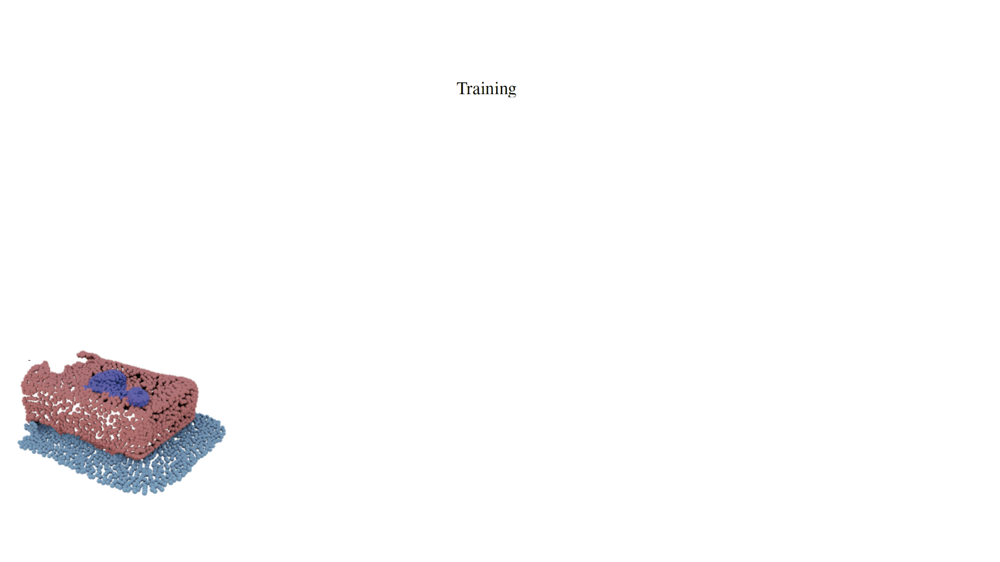
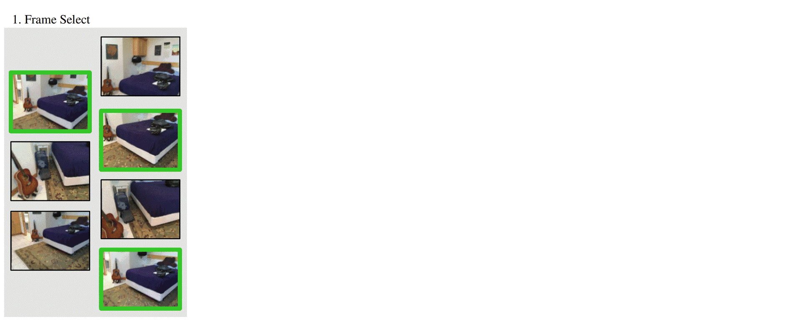
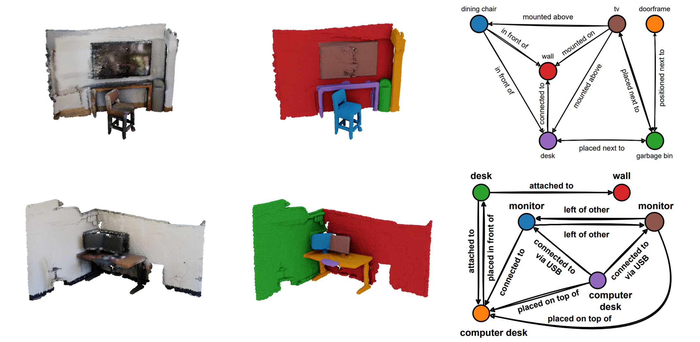
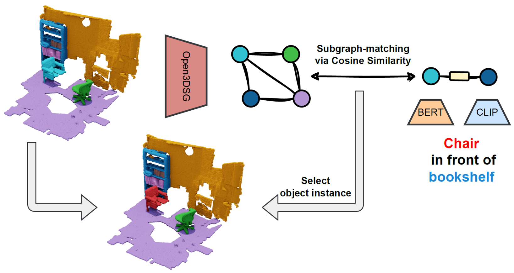
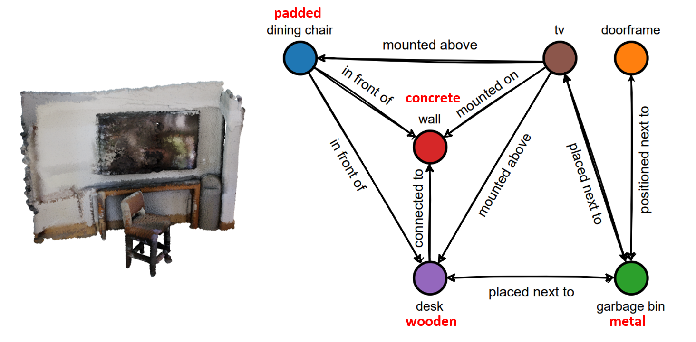
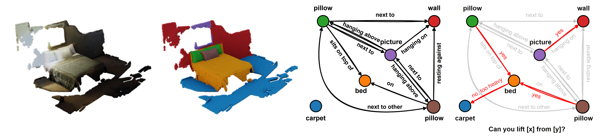

Open3DSG: Open-Vocabulary 3D Scene Graphs from Point Clouds with Queryable Objects and Open-Set Relationships
CVPR 2024

Abstract
Current approaches for 3D scene graph prediction rely
on labeled datasets to train models for a fixed set of known
object classes and relationship categories. We present
Open3DSG, an alternative approach to learn 3D scene
graph prediction in an open world without requiring labeled scene graph data. We co-embed the features from a
3D scene graph prediction backbone with the feature space
of powerful open world 2D vision language foundation
models. This enables us to predict 3D scene graphs from
3D point clouds in a zero-shot manner by querying object
classes from an open vocabulary and predicting the interobject relationships from a grounded LLM with scene graph
features and queried object classes as context.
Open3DSG is the first 3D point cloud method to predict not only explicit open-vocabulary object classes, but also open-set relationships that are not limited to a predefined label set, making it possible to express rare as well as specific objects and relationships in the predicted 3D scene graph. Our experiments show that Open3DSG is effective at predicting arbitrary object classes as well as their complex inter-object relationships describing spatial, supportive, semantic and comparative relationships.
Open3DSG is the first 3D point cloud method to predict not only explicit open-vocabulary object classes, but also open-set relationships that are not limited to a predefined label set, making it possible to express rare as well as specific objects and relationships in the predicted 3D scene graph. Our experiments show that Open3DSG is effective at predicting arbitrary object classes as well as their complex inter-object relationships describing spatial, supportive, semantic and comparative relationships.
Method Overview

Given a point cloud and RGB-D images with their poses, we distill the knowledge of two vision-language
models into our GNN. The nodes are supervised by the embedding of OpenSeg and the edges are supervised by the embedding of the
InstructBLIP vision encoder. At inference time, we first compute the cosine similarity between object queries encoded by CLIP
and our distilled 3D node features to infer the object classes. Then we use the edge embedding as well as the inferred object classes to
predict relationships for pairs of objects using a Qformer & LLM from InstructBLIP.
Frame Selection

For each instance in the 3D point cloud, we select the top k frames for object and predicate
supervision. For objects, we encode the frames using OpenSeg and aggregate the computed features over the projected points. For
predicates, we identify object pairs in the frame, crop the image at multiple scales and compute the image feature with the BLIP image
encoder. The features are aggregated over all crops. Finally, both object and predicate features are fused across the multiple views.
Scene Graph Predictions

We show the top-1 predictions on ScanNet from Open3DSG. The nodes are queried using the 3DSSG 160 class label set, while the edges are generated directly from the graph-conditioned LLM.
Open-Vocabulary 3D Scene Graph Applications
|  |  |
| Object Retrieval using relationship description | 3D Scene Graph + Open-Vocabulary Attributes |

Reasoning over inter-object affordances by LLM prompting
BibTeX
@inproceedings{koch2024open3dsg,
title={Open3DSG: Open-Vocabulary 3D Scene Graphs from Point Clouds with Queryable Objects and Open-Set Relationships},
author={Koch, Sebastian and Vaskevicius, Narunas and Colosi, Mirco and Hermosilla, Pedro and Ropinski, Timo},
booktitle = {Proceedings of the IEEE/CVF Conference on Computer Vision and Pattern Recognition (CVPR)},
month={June},
year={2024},
}